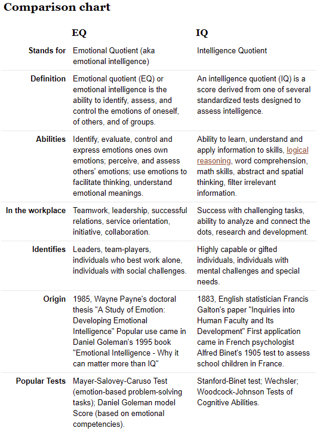

"It's the little things you do every day that make the biggest difference"
Emotional Intelligence (otherwise known as emotional quotient or EQ) is the ability to understand, use and manage your own emotions in positive ways to relieve stress, communicate effectively, empathise with others, overcome challenges and defuse conflict.
Emotional intelligence can help you build stronger relationships and become successful in all areas of your life, such as work and relationships, and having it can help you achieve your career and personal goals. It can help you connect with your feelings, turn intention into action, and make informed decisions about what matters most to you.
Commonly EQ can be defined by four attributes:
Briefly, Intelligence Quotient (IQ) is a total score derived from a set of standardised tests designed to assess human intelligence.
Scores from these intelligence tests are estimates of intelligence. However, concrete measures of intelligence are difficult to ascertain given the abstract nature of the concept of “intelligence”. The many different kinds of IQ test include a wide variety of item content. Some tests are visual and some tests may be verbal. Test items can vary from being based on abstract reasoning problems to focussing on arithmetic, vocabulary, or general knowledge. IQ tests measure your ability to solve problems, use logic and grasp and communicate complex ideas. EQ tests, on the other hand, measure your ability to recognise emotion in yourself and others, and to use that awareness to guide your decisions.
EQ forms the juncture at which cognition and emotions meet, it facilitates our capacity for resilience, motivation, empathy, reasoning, stress management, communication and our ability to read and navigate a plethora of social situations and conflicts. Having a high EQ can lead us on a path to a fulfilled and happy life by providing a framework through which to apply standards of intelligence to emotional responses and also understand these responses. Some theorists believe that EQ is dynamic whereas IQ is fixed. However, recent scientific findings say that having a “growth mindset” (as opposed to a fixed mindset) is important for both improving EQ and IQ.
